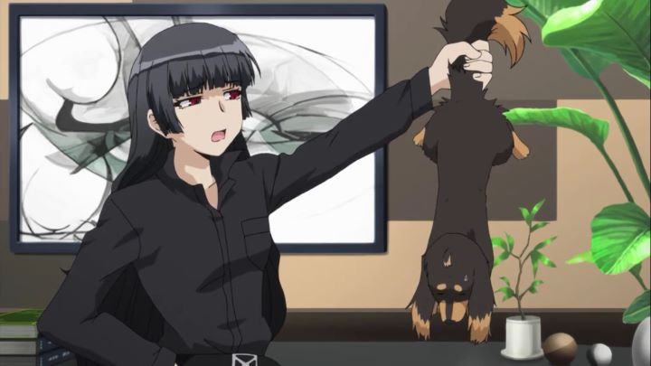

Deep down, I should be ashamed that I bllindly bought "Dog & Scissors" on home video. Although I can't be the only one to have done so: In America, Sentai Filmworks originally released this on a subtitled-only DVD set, but announced only a few months later that it would be re-releasing the set in a dubbed Bluray and DVD option. The company was just starting to double-down on its dubbing production, but I can't recall another series that had such a fast turn-around. And the initial premise sounds just intriguing and silly enough to make this a fun watch. But there's no sugar-coating it: "Dog & Scissors" is just plain stupid."Stupid" is a strange way to describe an anime that revolves so heavily around books. The show stars Kazuhito, a student and avid book-reader who arbitrarily gets shot in a robbery at his local cafe. So he dies. The end. But wait... magically, he gets reincarnated as a dog the day after! After a few days in the pound, his dog-self gets adopted by a young woman in a black coat, who happens to be none other than Kirihime Natsuno, the famous author behind the pen-name Shinobu Akiyama, author of Kazuhito's favorite mystery series, with only one book left to write! She adopted him because somehow, she is the only one able to understand his thoughts through telepathy, and it annoyed her enough to get to the source. Through a series of comedic mystery cases, the two bond while Natsuno continues to struggle to finish her book, and while they try to understand how they might brind Kazuhito back to being a human.Frankly, its a flimsy setup, but it might have been more fun if the story ever led to a conclusion. But it doesn't, at least not within the twelve-episode anime. Why is Kazuhito a dog? Why can Natsuno understand him? We'll never know. And without many clues to even start looking into the core mystery, there is a strong lack of urgency. Instead, the show revels in Natsuno's abrasive personality and desire to physically harm her new pet for fun, much to the fear of Kazuhito. Masochism fans don't have too much to choose from in their entertainment, but I don't think seeing a beautiful young woman threaten to cut a dog's tail off will quite satisfy that void. And if you actually LIKE dogs, I can only imagine how little fun you would have with the humor. There is some fun in the variety of side characters (all of whom are one-dimensional, but are distinct from each other), from Natsuno's editor, to a local idol and a rival writer. But the lack of a plot continues to get in the way. In the second-last episode, it appears there is about to be a big showdown between Natsuno and the show's main antagonist, only for the fight to be canceled at the last second, and completely forgotten about for a more simple final episode. It's a clever wall-breaking setup, but doesn't fullfill what it takes away, making this a clear excuse to not have a proper ending. There was a lot of potential for a fine mystery thriller, and the theme just doesn't sit well for the slice-of-life comedy it turned out to be. I guess there is a hint of human-dog romance by the end? Yeah, that's not weird at all... everyone loves dogs!  The animation and visuals in general is noticably below average, especially compared to the new standards of anime coming out around this time. I feel sorry for studio Gonzo, who hadn't fully recovered from their bankrupcy after a peak in the mid-2000's, but to be honest, the majority of their output even then wasn't far off from what "Dog & Scissors" provides. That brand new English dub wasn't particularly worth the wait, espcially with the annoying character traits many of the side characters have (if I have to hear a bubbly woman yell "SHINING!" again, I'm throwing a book at her). There are still reasons to look up "Dog & Scissors," despite how harsh I might seem. The characters can sometimes be fun, some of the comedy does sometimes work, and the premise is bizzare enough to peak anyone's curiosity. But being full of promise doesn't fix everything. I would say this show was for the dogs, but it might just give them nightmares.
- "Ani" More reviews can be found at : https://2danicritic.github.io/ Previous review: review_Digimon_Adventure_Tri Next review: review_Doreiku_-_The_Animation